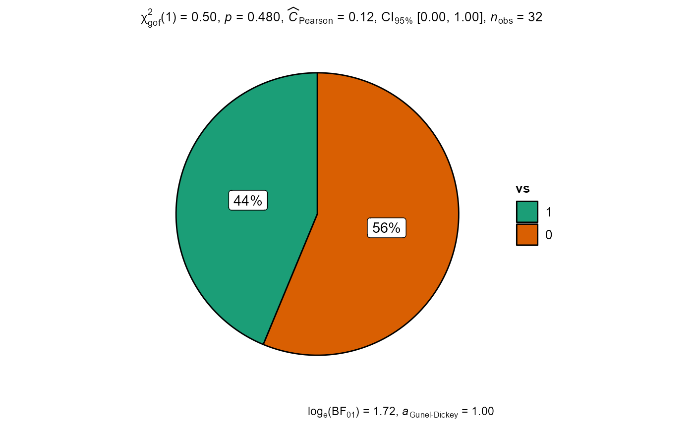

Pie charts with statistical tests
ggpiestats.RdPie charts for categorical data with statistical details included in the plot as a subtitle.
ggpiestats(data, main, condition = NULL, counts = NULL, ratio = NULL, factor.levels = NULL, stat.title = NULL, sample.size.label = TRUE, title = NULL, caption = NULL, nboot = 25, palette = "Dark2", legend.title = NULL, facet.wrap.name = NULL, k = 3, facet.proptest = TRUE, ggtheme = ggplot2::theme_bw(), messages = TRUE)
Arguments
| data | The data as a data frame (matrix or tables will not be accepted). |
|---|---|
| main | The variable to use as the rows in the contingency table. |
| condition | The variable to use as the columns in the contingency
table. This argument is optional (Default: |
| counts | A string naming a variable in data containing counts, or |
| ratio | A vector of numbers: the expected proportions for the proportion
test. Default is |
| factor.levels | A character vector with labels for factor levels of
|
| stat.title | Title for the effect being investigated with the chi-square
test. The default is |
| sample.size.label | Logical that decides whether sample size information
should be displayed for each level of the grouping variable |
| title | The text for the plot title. |
| caption | The text for the plot caption. |
| nboot | Number of bootstrap samples for computing effect size (Default:
|
| palette | If a character string (e.g., |
| legend.title | Title of legend. |
| facet.wrap.name | The text for the facet_wrap variable label. |
| k | Number of decimal places expected for results. |
| facet.proptest | Decides whether proportion test for |
| ggtheme | A function, |
| messages | Decides whether messages references, notes, and warnings are
to be displayed (Default: |
References
https://indrajeetpatil.github.io/ggstatsplot/articles/ggpiestats.html
Examples
# for reproducibility set.seed(123) # simple function call with the defaults (with condition) ggstatsplot::ggpiestats(data = datasets::mtcars, main = am, condition = cyl, nboot = 10)#> Warning: the argument for `main` was not a factor; converting it to factor#>#> Warning: the argument for `condition` was not a factor; converting it to factor#># simple function call with the defaults (without condition) ggstatsplot::ggpiestats( data = iris, main = Species )